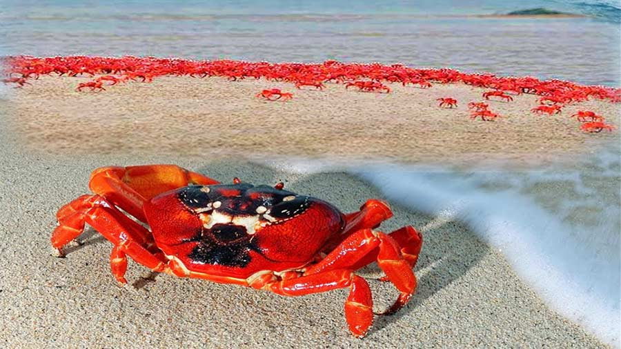

Let’s explore “Shagor Kannya” – Kuakata
Kuakata is one of the most amazing beauty spots on the southernmost tip of Bangladesh which is known to all for its eye-soothing panoramic sea beach. This exceptionally attractive beach is locally known as “Shagor Kannya” (Daughter of the ocean) for its incomparable beauty which offers the full view of the rising and setting of the crimson sun on the bed of the Bay of Bengal. This perhaps makes Kuakata one of the most unique beaches in the world. Kuakata sea beach is a stretch of 18 kilometres long and a 3-kilometre wide sandy expanse from where you can have a breathtaking view of both sunrise and sunset over the Bay of Bengal and a perfect pick for a beach vacation.
Destination: Kuakata Trip
A private tour can be arranged for a minimum of 2 people. The private tour includes bus fare, hotel accommodation, and breakfast.
Travel Cost (Private Tour):
- 4000 Taka per person | 3 nights | Standard hotel
- 5500 Taka per person | 3 nights | Standard hotel
- 4800 Taka per person | 1 night | 3-star hotel
- 7000 Taka per person | 1 night | 3-star hotel
- 5000 Taka per person | 1 night | 5-star hotel
- 12000 Taka per person | 1 night | 5-star hotel
What's Included in the Private Tour:
- Non-AC bus ticket + Hotel room + Breakfast
Optional Add-ons:
For AC buses, an additional 1200 Taka per person will be charged.
Tour Attractions:
- Green line, sea beach, sunset view
- Non-AC bus: Shymoli, Hanif, Ena Express
How to reach Kuakata?
There are various ways of transportation to reach Kuwakata, it is up to you which one you prefer. Kuakata can be reached by direct bus from different parts of the country through Dhaka. With the inauguration of Padma Bridge, reaching Kuakata has become easier by bus and private vehicles. You can start from Dhaka, take the route to mawa, and then drive through the mawa expressway to reach Padma Bridge. Then you follow the direct route to reach Kuakata. The fare varies according to the standard of the bus such as AC & Non-AC, so you can select among the options according to your preference. The other option is you can go by launch to Barisal- Patuakhali and later take a local bus or private vehicle to Kuakata. Crossing a few rivers and launching Kuakata will be an exciting experience for travellers. If you want to go by a good launch then please make sure to book your tickets at least 5-6 days before the travel date to have hassle-free travelling.
Sometimes these long journeys get really hectic and time-consuming so consider that the best way to reach Kuakata is to take a flight to Barisal, and rent a vehicle from there to reach Kuakata. This will not only save you time but will also be a comfortable journey. And Dhaka to Barisal air ticket prices are very much affordable and people can easily find the latest Dhaka to Barisal flight schedule to plan their trip accordingly.
Where to stay in Kuakata?
Like other tourist destinations, there are many hotels and resorts for accommodation located within a certain area in Kuakata, like:
- Hotel Graver Inn Internation
- Somudra Bari Resort
- Hotel Kuakata Square
- Hotel Mohona International Ltd
- Sikder Resort and Villas
- Kuakata Grand Hotel and Sea Resort
- Hotel Khan Palace
- Sagor Konna Resort Ltd
- Ocean View Hotel & Convention, etc.
The prices vary upon your selection of the room as well as timing. So, it is better to book your stay before you reach so that you don’t face any trouble later. You can scroll through
ShareTrip Hotel to find the perfect match to stay with your friends and family and enjoy a relaxing vacation at Kuakata.

Attractive places to visit in Kuakata
The city of Kuakata and the sea beach are separated by an embankment. At the mouth of the embankment, there are a wide variety of tourist spots to explore and enjoy. There are also symbols to show the direction of the spots. This is a great help for the traveller to figure out the sights of Kuakata. Apart from this list, there are a few more tourist spots in Kuakata, which can likewise be visited by travellers with the assistance of tour guides or locals.
Watch sunrise or sunset from the same location
Kuakata is one of the most uncommon locations to witness both sunrise and sunset in their entirety from the same location or vantage point. As a result, Kuakata is one of the most distinctive beaches in the world. Numerous tourists flock to Kuakata to explore this majestic sunset and the sunrise view from this superb sandy beach. There is a large, sandy beach in Kuakata which is approximately 30 kilometres long and 6 kilometres wide. Any traveller needs to get up quite early in the morning to see the sunrise from the Kuakata beach. Travellers will appreciate the lovely sunset in the afternoon. A stunning natural environment surrounds Kuakata's long and broad beach. Winter birds also have a reservation at Kuakata.
Travellers can also visit Kakra Dip (Crab Island), where anyone will find thousands of red crabs loitering around the sandy shore. To reach the island you need to travel by sea boats or speed boats and reach the destination within a short span of time.
Gangamati Reserved Forest
An evergreen mangrove forest, Gangamati Reserved Forest is located in Kuakata Patuakhali, Bangladesh. It is situated near the Kuakata beach's easternmost point. You can easily reach Gangamati Reserved Forest by walking or bicycling along the seashore. When you walk alongside the Kuakata sea shore, you will be mesmerised to see many flags fluttering on the fishing boats. Besides, a speedboat ride will take about an hour to reach Sundarban from Gangamati Reserved Forest.
Fatrar Char
Another lovely tourist destination close to Kuakata beach is Fatrar Char which is basically a section of Sundarban. Fatrar Char is also known as Fatrar Bon among the locals. Fatrar Chor is a mangrove forest because it is a component of the Sundarbans. Hence, Travellers can reach the Fatrar Chor from Kuakata very easily and quickly. In Kuakata, Fatrar Bon is a sizable forest which holds many timber trees in this area. This forest's trees are particularly robust and hardy and the wood from these trees is both expensive and incredibly durable.
Jhaubon
Jhaubon is a stunning location in Kuakata. Jhau bon is a short distance from a beach. Incoming tourists can get there on foot. There are numerous Jhau and coconut trees all around Jhau bon. And for this particular reason, this location has become an ideal spot for having a greater view of Kuakata's sunrise landscape.
Seema Mandir and Kuakata Buddhist Temple

Close to Kuakata beach, there is Keranipara which holds the famous Rakhine village. The Seema Mandir, a 100-year-old Buddhist temple in Keranipara, is open to visitors and tourists. Anyone will be astonished to know that eight various metals were used to create the Seema Mandir. Before entering the temple, visitors must remove their shoes to show their respect for the religious belief. Numerous tourists stop by the temple every day to see the Buddha statue. The pilgrims now consider Kuakata to be a sacred location. During the festivals of Rash Purnima and Maghi Purnima, a lot of worshippers come here. On these two days, worshippers participate in the customary festivals and take a holy bath in the bay. The historic fairs held in Keranipara are extremely popular with visitors.
Kuakata Buddhist Temple is only four (4) kilometres away from Kuakata beach. Tourists can choose any mode of transportation to travel there with their friends and family. Any visitor to a Buddhist temple will view the 200-year-old wells as well as the Goutom Buddha statue. The ancient history and cultural heritage of the traditional Rakhine tribal families and Buddhist temples date back roughly 100 years.
Kuakata Ecological Park
About 2.5 kilometres east of Kuakata's zero point is where you will find Kuakata Ecological Park, also known as Kuakata Eco Park. The Eco Park spans roughly 13,984 hectares of area. The Patuakhali Coastal Forest Department built the Eco Park. The Eco Park is located on Kuakata Sea Beach in the areas of Gangamati, Latachaplee, Khajura, Fatrar chor, and Tengragiri. Forest, both mangrove and non-mangrove, surrounds Eco Park.
This park has a wide variety of trees and plants, making it a secure place for birds to raise their young. This park has over 42000 different kinds of flora. There are interior corridors for the passengers, two watch towers, five picnic huts, a wooden bridge, and other features. A bridge connects the lake's two shores, which have a nice-looking Lake inside the parking area. At this lake, guests can ride in a paddle boat. For those who visit the Kuakata sea beach, Eco Park is a must-see destination. Travellers that visit this Eco Park will experience all of nature's beauty.
Shutki Polli
Another location at Kuakata where tourists can go is Shutki Polli. It is 4 kilometres to the west of Kuakata beach. Shutki Polli is a stop on the route to Lebur Bon/Lebur Chor. One can learn how to create dry fish from that location (shutki). He will witness the entire drying-fish process. From the sea, fishermen catch a variety of species. Some of the fish is sold fresh, and the remaining fish is used to manufacture dried fish. Various types of fish are processed here. Shutki fish/dry fish, which is produced from Shutki Polli, is distributed throughout Bangladesh and exported to numerous nations.
Lebur Char
Located five kilometres to the east of Kuakata beach lies Lebur Char. Locally, lebur char is sometimes referred to as lembur chor or "Nembur chor." This chor is surrounded by roughly 1000 acres. This chor is home to a wide variety of trees and plants, including Keura, Geowa, Goran, Koroi, and Golpata. Lebur Char used to be a part of Sundarban, but it has since been cut off. It is located in Kuakata's easternmost corner. So, it is simple for travellers to travel from Kuakata to Lebur Char.
Narikel Bagan

For tourists from Kuakata, Narikel Bagan (Coconut Garden) is a lovely location to visit. It is located on the sea beach's eastern side. From Kuakata beach, it is not far at all. Therefore, a traveller can simply get there by walking. The locals claim that this coconut garden is over 40 years old. In the location, there are many coconut trees. Earlier, a sizable region along the seaside beach helped form Narikel Bagan. But as of right now, it is dwindling daily. It has happened in order to raise the sea level. The front side trees of the garden are destroyed by the sea's powerful waves. However, some of the trees are still standing, allowing visitors to the area.
Mishti Panir Kua

Mishti Panir Kua (Sweet Water Well) - Kua actually means well in English. This water well actually bears witness to the history behind the name of this place. To experience the sweet water well, first, you have to reach Keranipara, where all the Rakhine people live. The well was actually dug by the Rakhine settlers who came here in 1784 as refugees. This well was dug for freshwater as the sea water was too salty to drink or even carry any tasks with that. Later the place was named Mishti Panir Kua as per the name.
Last but not least there are a few tips to make your trip safer and hassle-free:
* Be careful if you travel during monsoon as the tide stays high with a very swift current flowing through.
* Follow the signal and cautious signboard before diving into the sea.
* Feel free to bargain while hiring a boat or CNG to reduce costs.
* You can travel in groups to reduce costs.
* Be friendly with the local people, they are very helpful in nature.
* Don’t forget your beach essentials to protect yourself from the sunlight.